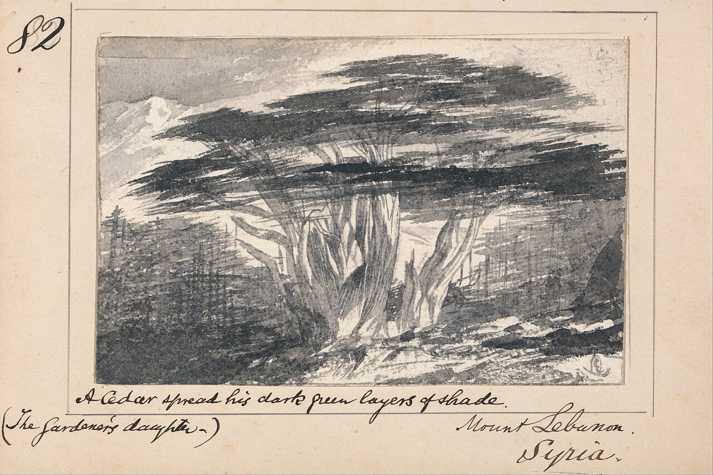

Ask Teta إسأل تيتا
Tell Teta what you feel like eating
A dish, a craving, an allergy, a city, a budget: she knows every menu on Foodies and who makes it right.
Teta is here
Teta can make mistakes. With an allergy, always check with the restaurant.
